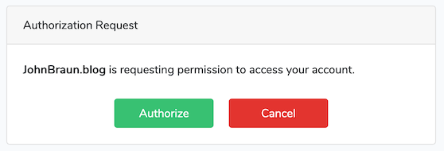
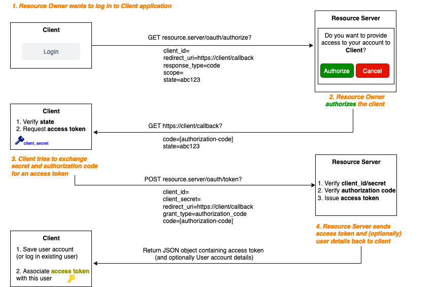
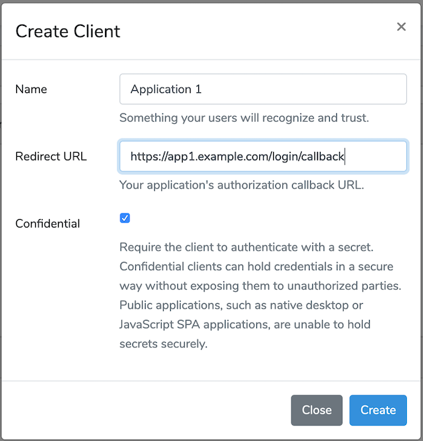
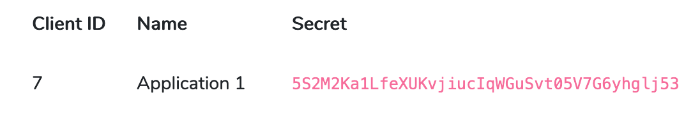
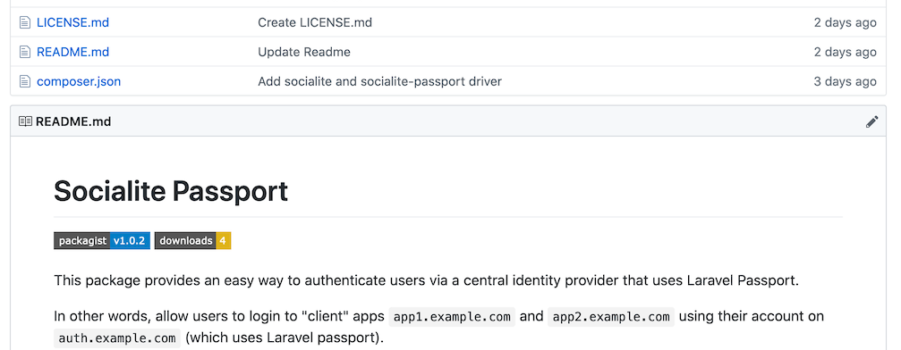

OAuth2 authentication across Laravel projects
- Published: 09-12-2019
Introduction
A question popping up every now and then is how to let users log in to separate (child) applications using a single account they own on a central application.
In this post I try to explain how to achieve this infrastructure, by creating a central application using Laravel Passport (example.com) where users register once and then use OAuth2 to grant access to their account to the other applications (app1.example.com, app2.example.com, etc.) using Laravel Socialite. Note: the applications do not necessarily have to use the same domain.
In this way, users will be able to login to the child applications without creating a new, separate account.

If you're not yet familiar with the OAuth2 protocol, I've included a section on the how and what below.
What is OAuth2?
Before jumping into Laravel Passport, it is important to understand the OAuth protocol it implements.
OAuth is an open standard, designed to provide API access delegation. Think of using a third party Twitter app which can tweet on your behalf to the Twitter platform. I explicitly mention Twitter since development of this standard was (amongst others) driven by lead developer Blane Cook, in need of authorization of external parties.
After initial release of version 1.0 in 2010, the protocol matured over the course of 2 years after which version 2.0 was released. This improved protocol offers support for Bearer tokens and provides "specific authorization flows for web applications, desktop applications, mobile phones, and smart devices." (Wikipedia)
Let's have a look at what is meant with the terms "Bearer token" and "authorization flow" .
Bearer Tokens
The word "Bearer" means you're in possession of a certain (access) token. The bearer being the third party application, which possesses an access token issued by the identity provider. This token provides immediate access to a resource, without requiring a username and password. All necessary information is linked to this token, including user details and the scope of possible actions this third party may perform on behalf of this user.
The bearer token is usually included in the Headers of a GET or POST request to an API endpoint. A concrete example of using the Bearer token is shown below, making a GET request to '/api/user' using the Guzzle HTTP library to a corresponding API endpoint sending along a Bearer Authorization header.
<?php
$response = $client->request('GET', '/api/user', [
'headers' => [
'Accept' => 'application/json',
'Authorization' => 'Bearer ' . $accessToken,
],
]);
Authorization Flow
Now that we know what a Bearer access token is ... how do we obtain one?
First, let's look at the formal roles in OAuth2:
- - Resource Owner: the user who wants to login and delegate access to their account details to a third party application
- - Resource Server: the server (API) where the user has an account
- - Client: the third party application that wants to access the account information on the resource server
The OAuth 2.0 protocol performs a standard communication flow between Client and Resource Server, where each step and given/required parameters are defined in advance. Ultimately, the Client receives the Bearer access token from the Resource server. This process is illustrated in the figure below (created using draw.io). Note: it is assumed that the Client (third party application) is registered with the Resource Server.

After this little "dance", the Client now possesses an access token which can either be long-lived or short-lived (more secure). If the access token is short-lived, the Resource Server will also provide a refresh token which can be used - in combination with the client secret - to obtain a new access token in a way resembling Step 3 in the diagram above. Note: the "state" parameter is used to prevent CSRF related attacks, by verifying the request is not forged.
Now, let's see how Laravel Passport implements this protocol.
Laravel Passport
In case of our example, we want the identity provider (example.com) to make use of Laravel Passport.
Laravel Passport is an OAuth2 server, built upon the League OAuth2 server. It provides an easy implementation for existing Laravel applications by requiring the composer package.
Setting up the Resource Server
Follow the clear installation instructions and/or watch this explanation on Laracasts by Taylor Otwell. Don't forget to add the hasApiTokens trait to your User model.
After installation, you now have the possiblity to add new Clients having a callback url and an automatically generated secret. For each of the "child" applications (app1.example.com, app2.example.com, etc.) you need to create a new Client with their own callback, for now you might choose https://app1.example.com/login/callback for example (we will come back to this).

Laravel Passport will take care of the authorization dialog, providing an authorization code, verifying the client secret in combination with the authorization code and lastly provide a User object and (by default) a long-lived access token. The lifespan of the access and refresh tokens are configurable.

Laravel Socialite
Now that we have set-up the Resource Server (identity provider), we need to take care of the Client side of things.
Besides Passport, Laravel offers a package called Laravel Socialite, which will take care of the Client side of things when authenticating via OAuth2.
Out of the box, it allows authentication with the services of Facebook, Twitter, LinkedIn, Google, GitHub, GitLab and Bitbucket.
Socialite Providers
However, there is a collection of additional providers, amongst which an adapter supporting Laravel Passport.
Setting up the Client
To achieve a shared login system across multiple Laravel applications, my proposed solution involves making use of the Socialite provider for Laravel Passport.
Looking at the installation instructions of the Socialite provider, there are quite a number of steps, to make sure a client application is able to identify users using the Laravel Passport identity provider.
- Install Laravel Socialite
- Install Laravel Passport provider for Socialite
- Add methods to LoginController
- Copy the 'laravelpassport' config to config/services.php
- Add 'SocialiteWasCalled' event and listener to EventServiceProvider
Now, this seems like a lot of steps to repeat for every Client application we might already have and want to couple to our Resource Server. That's why I made a package (see GitHub repository) that combines Laravel Socialite with the Passport driver and can be configured in a more efficient way.
Socialite-Passport package

In a Client Laravel application that you want to couple to the Passport Resource Server, first install the custom 'socialite-passport' package:
composer require jhnbrn90/socialite-passport
Next, publish the configuration file:
php artisan vendor:publish --provider="JhnBrn90\SocialitePassport\SocialitePassportServiceProvider" --tag="config"
This will publish a file socialite-passport.php in the config directory, in which you can define which Controller (defaults to LoginController that ships with Laravel) and which method should be called when the login route (also configurable) is called.
<?php
return [
'controller' => [
'class' => \App\Http\Controllers\Auth\LoginController::class,
'method' => 'loginWithPassport',
],
'route' => [
'name' => 'login',
'uri' => '/login',
],
];
Assuming the defaults in the above configuration, after Authorization is granted by the Resource Owner at the Resource Server (Laravel Passport), the method loginWithPassport() will be called and a User object will be injected. This method needs to be implemented in the defined controller (in our example, the LoginController):
<?php
class LoginController extends Controller
{
public function loginWithPassport($user)
{
// example:
User::firstOrCreate(['name' => $user['name'], 'email' => ...]);
}
}
To be able to provide the Resource Server with a client_id, callback_uri, etc. you must add these variables to your .env file:
LARAVELPASSPORT_CLIENT_ID=
LARAVELPASSPORT_CLIENT_SECRET=
LARAVELPASSPORT_REDIRECT_URI=/login/callback
LARAVELPASSPORT_HOST=https://example.com
Remember, the LARAVELPASSPORT_CLIENT_ID and LARAVELPASSPORT_CLIENT_SECRET come from the Laravel Passport Resource Server, where the Client needs to be created first.
The package will make sure to match the route you provide as the LARAVELPASSPORT_REDIRECT_URI environment variable and proxies the request through the corresponding method and controller you've configured in the config file.
Conclusion
That is all it takes to implement a basic functional shared login system.
I hope this post could shed some light on the OAuth2 protocol and how it can be used with the mentioned tools to achieve a shared authentication system amongst different Laravel projects.
It might be a good idea to also store the access token (and the resource token) on the user model to be able to update information whenever a user changes its profile on the Resource Server. Or to collect other data of that user from the Resource Server of course.
Summary
- Laravel Passport implements a fully functional OAuth2 server (Resource Server)
- Laravel Socialite implements a way to authenticate with an OAuth2 server (Client)
- The Socialite provider for Laravel Passport allows authentication with Laravel Passport
- Clients can be prepared using this package combining both Socialite with the Passport adapter